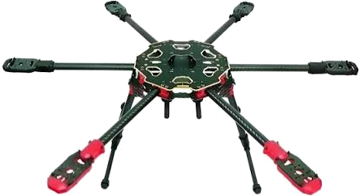

CRAFT ORIENTATION — relative to calibrated zero

fusion: waiting
▲ nose (+X)
Y right
Z up
gravity is down · yaw spins in-plane
gravity is down · yaw spins in-plane
MOVEMENT (Δ from calibration)
ROLL
0.0°
abs 0.0°
PITCH
0.0°
abs 0.0°
YAW
0.0°
abs 0.0°
Calibrate averages the last ~0.4 s and makes that pose 0°, so moving the sensor 36° shows 36°. Hold still for “Zero gyro”. Yaw has no magnetometer → it drifts slowly; roll/pitch are gravity-referenced.
ABSOLUTE / DIAGNOSTICS
Roll–
Pitch–
Yaw–
Gyro bias (dps)–
Fusion frames0
Port–